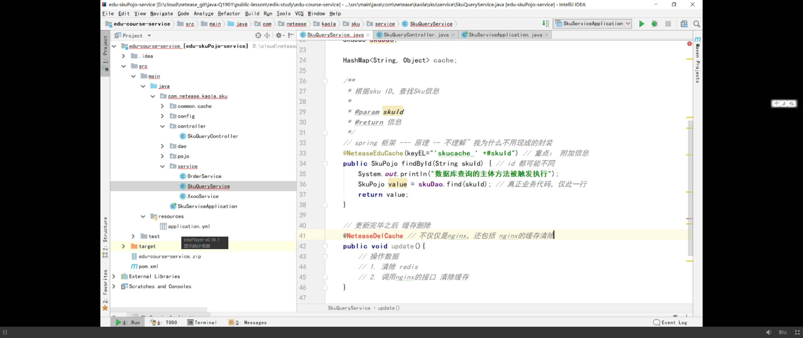

架构设计图--数据缓存
架构图
缓存设计图
数据库 缓存
Mysql PGSQL MongoDB自带的缓存
读写分离配置缓存
引入缓存可以提高性能，但是数据会存在两份，一份在数据库中，一份在缓存中，如果更新其中任何一份会引起数据的不一致，数据的完整性被破坏了，因此，同步数据库和缓存的这两份数据就非常重要。本文介绍常见的缓存更新的同步策略。
预留缓存Cache-aside
应用代码能够手工管理数据库和缓存中数据，应用逻辑会在访问数据库之前检查缓存，在数据库更新以后再更新缓存：
上图中Cache update缓存更新时，通过手工编码分别对数据库save(entity)和缓存(put(key,entity))做更新，将这种琐碎的缓存管理和更新夹杂在应用逻辑中并不是一种好方式，可以采取AOP面向方面拦截器等方式实现缓存操作，减轻缓存操作泄漏到应用代码中，同时确保数据库和缓存都能正确同步。
Read-through
相比上面同时管理数据库和缓存，我们可以简单委托数据库同步给一个缓存提供者，所有数据交互通过这个缓存抽象层完成。
图中CacheStore是我们的缓存抽象层，当我们应用通过其抓取一个缓存数据时，这个缓存提供者确认缓存中是否有该数据，如果没有，从数据库加载，然后放入缓存，下次以后再访问就可以直接从缓存中获得。
Write-through
类似于Read-through的数据抓取策略，缓存能够在其中数据变化时自动更新底层数据库。
尽管数据库和缓存同步更新了，但是我们也可以按照我们自己的业务要求选择事务的边界：
- 如果需要强一致性，，并且缓存提供者提供了XAResource ，这样我们可以在一个全局事务中完成缓存和数据库的更新，这样数据库和缓存更新是在一个原子单元：single atomic unit-of-work
- 如果只需要弱一致性，我们可以先后更新缓存和数据库，不必使用全局事务，这会让我们提升快速响应性与性能，通常缓存首先被更新，如果数据库更新失败，缓存可以通过补偿动作实现回滚当前事务所做的改变。
Write-behind
如果强一致性不是必须的，我们可以简单将缓存的更新放在队列中，然后定期批量地去更新数据库。
这种策略虽然打破了事务保证，但是性能要远远超过write-through，因为数据库能够快速批量更新，事务机制不再需要。
应用层 缓存
单应用缓存
ASP.NET Core 支持多种不同的缓存。 最简单的缓存基于 IMemoryCache，它表示存储在 Web 服务器内存中的缓存
System.Runtime.Caching/MemoryCache
单应用缓存 -不能跨进程/跨应用访问
应用系统/服务器 多个应用/进程占用 内存紧张
应用层 => 分布式中间件
.Net Core分布式缓存
则数据：
- 是连贯（一致） 跨多个服务器的请求。
- 服务器重新启动和应用部署仍然有效。
- 不使用本地内存。
分布式的缓存配置是特定于实现的。 配置 SQL Server 和 Redis 分布式的缓存。 第三方实现也是可用，如NCache (GitHub 上的 NCache)。
无论选择哪一种实现，该应用程序与使用缓存进行交互IDistributedCache接口。
分布式中间件 缓存

分布式 应用缓存
客户端缓存
内容不小 不经常变
服务器采购 带宽很贵
放在客户端-，浏览器

加载静态文件
ajax异步请求数据包 内容
首次请求 Hash出的 ETag
后续对比 处理ETag
hash对比 符合则反馈304 不用做处理使用缓存内容
减少带宽损耗

浏览器储存
分布式 负载均衡
Nginx配置
Ngnix缓存的定义
代理缓存内容 应用关闭后仍可使用
阿里Tengine
轮间机制 - 负载均衡
命名规则
更新缓存
删除redis 缓存
网易删除 代理缓存

Lua-Ngnix
Ngnix 直接访问Redis
读写分离
数据库读写分离
基于redis做mysql读写分离。